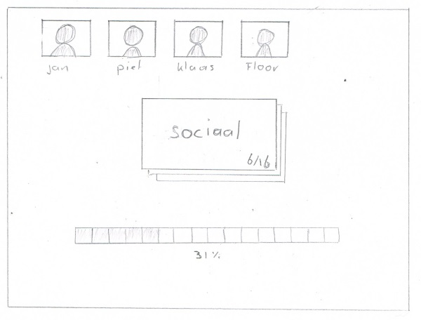
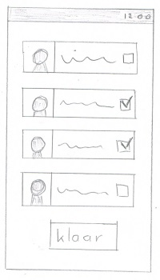
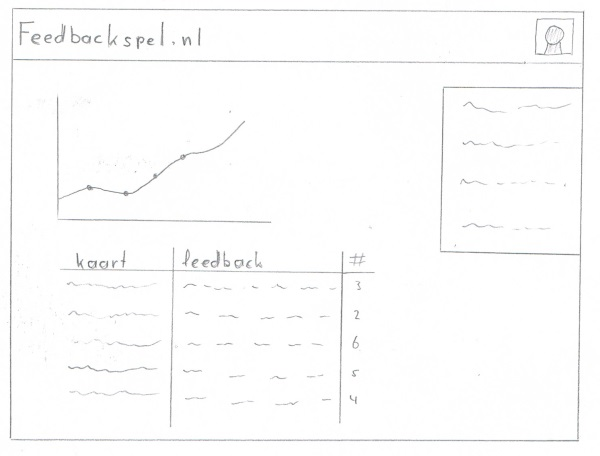

# Afstudeerplan Vincent Bremer
| Startdatum: |
17 februari 2014 |
| Einddatum: |
5 juni 2014 |
| Afstudeeropdracht: |
Feedbackspel.nl |
| Student: |
Vincent Bremer |
| Studentnummer: |
205133 |
| Adres: |
Valstraat 33
8605AV Sneek |
| Telefoon: |
06 504 909 16 |
| E-mail: |
vbremer89@gmail.com |
| School: |
NHL Hogeschool |
| Opleiding: |
Communication & Multimedia Design |
| Mentor: |
J.W. Hovingh |
| Vakdocent: |
D.S. de Vries |
## Voorwoord
Na 3,5 jaar is het tijd om te beginnen met mijn afstuderen. Ik heb lang nagedacht over hoe ik dit ga aanpakken. Ga ik op zoek naar een opdracht bij een bedrijf? Ga ik een eigen opdracht doen? Wil ik alleen, of met nog iemand afstuderen? Ik heb uiteindelijk besloten om in m'n eentje een eigen opdracht te gaan doen. Dit om mezelf te dwingen zelfstandig te werken, en een eigen opdracht geeft me de ruimte om iets te doen wat ik leuk vind. In dit afstudeerplan zal ik omschrijven aan welke opdracht ik ga werken en welke stappen ik zal ondernemen om tot een succesvol resultaat te komen.
## Probleemstelling
Op zowel scholen als in het bedrijfsleven krijgen mensen ermee te maken; reflecteren, feedback geven en ontvangen, en samenwerken in een team. Het is erg belangrijk om te weten waar je kwaliteiten liggen, en aan welke punten je nog moet werken.
Het feedback geven en ontvangen met een groep mensen kan op verschillende manieren gedaan worden. Wanneer een feedback sessie gehouden wordt in een groep kan men gebruik maken van een zogenaamd 'feedbackspel'. Deze spellen zijn vrijwel altijd in de vorm van een kaart en/of bordspel. Dit moet vaak gekocht of geleend worden, hierdoor is het niet altijd beschikbaar. Daarnaast moet de feedback nog opgeschreven worden, met het risico de aantekeningen kwijt te raken. Deze aantekeningen moeten vervolgens worden uitgetypt en kunnen later dienen als uitgangspunt bij het reflecteren. De kans bestaat dat hier enige tijd tussen zit waardoor het soms moeilijk is deze informatie weer naar boven te halen.
Na meerdere feedback sessies moet progressie of persoonlijke groei zichtbaar zijn. Om dit inzichtelijk te krijgen moet de ontvangen feedback erg gestructeerd verwerkt worden, en iemand moet later ook de moeite willen nemen om de voorgaande resultaten te vergelijken.
## Opdrachtomschrijving
Een korte [zoekopdracht](https://www.google.nl/search?q=feedback%20spel) naar "feedbackspel" op Google levert diverse resultaten op. Er zijn veel boeken en spelletjes te vinden die kunnen helpen bij het uitvoeren van een feedback sessie. Vrijwel al deze spellen zijn in de vorm van een bordspel of met papieren kaartjes.
Door een digitale variant te ontwikkelen is het mogelijk om met een uniek product te komen. Dit kan bijvoorbeeld een (web-)applicatie zijn welke op een laptop, tablet of mobiel gebruikt kan worden. Zo'n applicatie moet het eenvoudiger maken om een feedback sessie te organiseren en het mogelijk maken om de resultaten te analyseren.
## Doelgroep
In eerste instantie zal ik me voornamelijk richten op HBO studenten. Vooral bij de competentie gerichte opleidingen waar studenten veel samenwerken in een team is het geven van feedback een belangrijk onderdeel. Mogelijk zal de doelgroep ook uitgebreid kunnen worden naar andere onderwijsvormen of het bedrijfsleven. Ik zal dan wel moeten onderzoeken in hoeverre hier aandacht besteed wordt aan het geven van feedback in een team of projectgroep.
## Doelstelling
Het geven en ontvangen van feedback binnen een team moet toegankelijker, makkelijker, en leuker worden. De ontvangen feedback moet op een eenvoudige manier inzicht geven in de vorderingen van de student.
## Het idee (concept)
De studenten zitten gezamelijk aan tafel met een laptop, tablet of telefoon. Iedere student registreert een account op de (web-)applicatie en één iemand maakt een nieuwe feedback sessie aan en nodigt deelnemers uit. Degene die de sessie aangemaakt heeft wordt automatisch de 'host' en zal het spel starten zodra alle deelnemers verbonden zijn.
Vervolgens krijgt iedereen dezelfde feedback kaart te zien met daarop een eigenschap. De deelnemers geven individueel deze kaart aan één of meerdere personen typen hierbij een kort stukje feedback. Zodra alle deelnemers dit gedaan hebben worden de resultaten getoond en kan de host de volgende ronde starten. Dit herhaald zich een aantal rondes tot alle kaarten geweest zijn.
Na afloop krijgt iedere deelnemer een overzicht van de ontvangen kaarten met daarbij de ontvangen feedback. Deze resultaten worden ook opgeslagen zodat ze later weer opgezocht kunnen worden. Ik wil hier graag een soort score aan koppelen zodat het mogelijk wordt om bijvoorbeeld knelpunten aan te duiden en de groei in kaart te brengen. Deze resultaten moeten een basis kunnen vormen waarop gereflecteerd kan worden, en waaruit nieuwe leerdoelen opgesteld kunnen worden.
### Ingame

### Mobiel

### Statistieken

## Hoofd en deelvragen
### Hoofdvraag
- Met welke feedback spellen vinden mensen prettig werken en zijn mogelijk te verwerken in een applicatie?
### Deelvragen
- Doelgroep onderzoek:
- Op welke opleidingen werken mensen in een (project-)groep en wordt aan feedback gedaan?
- In welke branches werken mensen samen en wordt aan feedback gedaan?
- Feedback onderzoek:
- Waarom wordt er aan feedback gedaan?
- Welke feedbackmethodes worden zoals gebruikt?
- Worden de feedback sessies in groepsverband gehouden?
- Welk doel hebben de reeds bestaande feedbackspellen?
- Interactieve (web)applicaties:
- Wat houd een realtime (web-)applicatie in?
- Welke technieken worden hiervoor toegepast?
## Competenties
| Research and Innovation |
6 EC expert |
| Growth and Reflection |
6 EC expert |
| Multimedia Production |
6 EC expert |
| Quality Monitoring & Implementation |
6 EC expert |
| Multimedia Design |
6 EC expert |
## Research and Innovation
De multimediadeskundige onderzoekt wat voor innovatieve multimedia-oplossing nodig is in diverse omgevingen.
### Behaviours:
- Signaleert een communicatievraagstuk
- Interpreteert een communicatievraagstuk
- Signaleert kansen voor verbetering in gebruikersprocessen
- Vertaalt een situatie naar een eenduidige onderzoeksvraag
- Kiest beargumenteerd voor passende analyse- en onderzoeksmethodieken
- Verzamelt relevante informatie uit diverse bronnen
- Beoordeelt informatie op betrouwbaarheid
- Koppelt eigen kennis aan de gegeven situatie en omgeving
- Houdt rekening met omgevingsfactoren
- Anticipeert met onderzoeksaanbevelingen op trends
### Results:
- Doelgroep onderzoek
- Onderzoeksplan feedback geven/ontvangen
- Enquêtes en interviews
- Onderzoeksplan realtime webapplicaties
### Mindset:
Onderzoekend, Onafhankelijk, Nieuwsgierig, Open voor intuïtie, Lateraal denken, Diplomatiek, Milieubewust, Omgevingsbewust, Tot de kern doordringend, Wereldburger, Trendbewust
### Leerdoelen
- Product gericht onderzoek uitvoeren.
- Resultaten uit onderzoek direct verwerken in prototype.
- Hoe ik onderzoek en het ontwikkelingen tegelijkertijd kan uitvoeren.
- Opstellen van goede vragenlijsten en hoe deze over een grote groep mensen te verspreiden is.
### Activiteiten
- Onderzoek uitvoeren naar verschillende feedback spellen
- Enquetes en/of interviews met studenten/bedrijven houden
- Technisch onderzoek realtime webapplicaties
## Growth and Reflection
De multimediadeskundige reflecteert op eigen werk en handelen.
### Behaviour:
- Stelt haalbare doelen
- Formuleert eigen activiteiten bij competenties op basis van eigen startsituatie en leerdoelen
Reflecteert (op eigen handelen, werk, overtuigingen, houding, leerstijl, rol, ambities, artistieke stijl- )
- Benoemt eigen verbeterpunten voor het volgende traject
- Verbetert na reflectie eigen werk en handelen
### Results:
- Reflectieverslagen
- Feedback
- Afstudeerplan
### Mindset:
Lerende houding, life long learning, Bereid tot reflectie, Bewust van jezelf, Open voor feedback, Eerlijk, openhartig, Doelgericht
### Leerdoelen
- Volledig zelfstandig een project uitvoeren.
- Veel thuiswerken en toch gemotiveerd blijven en harde deadlines stellen.
- Reflecteren volgens een bestaande methodes, bijvoorbeeld STARR.
- Makkelijker voor een groep mensen leren praten, bijvoorbeeld bij een presentatie of bij het testen.
- Een product verkopen, meer commercieel leren denken.
### Activiteiten
- Uitzoeken welke reflectiemethodes er zijn en een kiezen welke mij aanspreekt.
- Halverwege en aan het einde van het project op mezelf reflecteren.
- Het project presenteren (eindpresentatie, weekopening minor The Next Web)
- De applicatie proberen te 'verkopen' zodat mensen het graag willen gebruiken.
## Multimedia Design
De multimediadeskundige ontwerpt op basis van het concept multimediaproducten en -diensten
### Behaviour:
- Vertaalt vanuit artistieke visie en vaardigheden op grond van de vraag van de klant een multimediaconcept naar mockups, schetsen, audio-ontwerp, moodboards en prototypen
- Verwerkt de mockups, schetsen, moodboards en prototypen, grafisch, technisch en functioneel ontwerp en audio-ontwerp in een ontwerpdocument
- Gebruikt het ontwerpdocument als communicatiemiddel met de klant
### Results:
- Functioneel ontwerp
- Webapplicatie
### Mindset:
Bewust van de balans tussen Mens, Techniek en Gevoel/Ervaring, Bewust van nut, commerciële waarde en gebruiksvriendelijkheid, Consistent, Bewust zijn van eigen artistieke stijl, Integraal denken: integraal ontwerpkeuzes maken op grafisch -, technisch - en functioneel gebied, Kwaliteitsbewust
### Leerdoelen
- Het maken van een webapplicatie welke werkt op zowel een computer, tablet als mobiel.
- Het maken van technische schema de werking van de applicatie in overzichtelijk in kaart brengen.
- Het technisch ontwerp maken via de broncode.
### Activiteiten
- Uitzoeken hoe [DocBlock](http://www.phpdoc.org/) werkt.
- Diverse UML (?) teken programma's testen.
- API documentatie bestuderen en kijken hoe anderen deze opgebouwd hebben.
## Multimedia Production
De multimediadeskundige voert multimediaontwerpen uit
### Behaviour:
- Leert omgaan met de tools die nodig zijn om de oplossing te produceren
- Kiest productiemethoden in een optimale prijs/kwaliteitverhouding
- Gebruikt het ontwerpdocument als uitgangspunt voor het realisatieproces
- Produceert door middel van een combinatie van media een doeltreffend eindproduct
- Bewaakt bij het produceren de consistentie van het eindproduct in relatie tot het ontwerp en het concept
- Voert afstemmend overleg met uitvoerders, gebruikers en opdrachtgever
### Results:
- Kernproduct: volledig werkend en afgerond eindproduct conform vooraf met de opdrachtgever overeengekomen criteria
- Deelproducten zijn: prototypen, audio-effecten, audiotracks, programmacode, videomateriaal, animaties, teksten, databases, verpakkingen, handleidingen, dvd's
### Mindset:
Doelgericht, Resultaatgericht, Leergierig, Consistent, Nauwkeurig, Kwaliteitsbewust
### Leerdoelen
- Opzetten van een Apache en/of Node.js webserver
- Combineren verschillende webtechnieken
- Statische data via PHP
- Realtime data via Node.js
- Uitzoeken wat er allemaal komt kijken bij realtime webapplicaties.
- Zoveel mogelijk gebruik maken van geteste en bestaande technieken, niet het wiel opnieuw uitvinden.
### Activiteiten
- Ontwikkelen in het Laravel framework.
- Ontwikkelen met Node.js.
- Gebruikmaken van diverse JavaScript libraries.
- jQuery / Zepto
- Socket.io
- Templating
- Applicatie online zetten
## Quality Monitoring & Implementation
### Behaviour:
- Ontwikkelt testprotocollen en testen op basis van proces- en gedragsanalyses
- Beoordeelt in diverse productiefasen met tests de gebruikskwaliteit
- Verwerkt testresultaten en organiseert zo nodig het verbeterproces
- Implementeert de multimediatoepassing in de omgeving
- Verzorgt de gebruiksinstructie, adviseert de eindgebruikers, organiseert nazorg en evalueert het proces
- Ontwikkelt en bewaakt het kwaliteitsbeleid
- Ontwerpt procedures voor realisering en bewaking van kwaliteit
- Stelt richtlijnen op (stijlboek, procedureboek, testvoorschriften)
- Instrueert medewerkers over kwaliteitsborging
### Results:
- Testprotocol
- Testresultaten
- Implementatieverslag
### Mindset:
Gericht op kwaliteit, Gericht op effectiviteit en efficiëntie, Gericht op preventie, Gericht op behoeften en mogelijkheden van gebruikers, Zorgvuldig
### Leerdoelen
- Opstellen van een testplan waaruit meetbare resultaten gehaald kunnen worden.
- Samenwerken met de doelgroep en testpersonen.
- Het eindproduct of prototype aanpassen aan de hand van de ontvangen feedback.
- De informatie verwerken en een verbeterplan leren schrijven.
- Rocket Surgery Made Easy lezen.
### Activiteiten
- Testmomenten houden
- Schrijven testplan(nen)
- Testpersonen zoeken.
## Werkwijze
### Rapid prototyping
Ik zal beginnen met kort en bondig onderzoek om een noodzakelijke basis te leggen. Vervolgens wil ik zo snel mogelijk een werkend prototype ontwikkelen. Dit prototype zal aan de hand van een testplan getest worden bij de doelgroep en op basis van de feedback worden aanpassingen gedaan. Deze manier van werken heb ik in het verleden vaker toegepast en werkt voor mij erg goed. Daarnaast zorgt het ervoor dat ik straks erg gericht onderzoek kan doen zo veel effectiever relevante informatie kan vergaren.
### Scrum
Een project draaien volgens de Scrum methode werkt erg goed samen met het rapid prototyping. Door korte sprints te hanteren van +/- 2 weken is er genoeg tijd om een prototype te ontwikkelen of verbeteren en deze te testen. Het zal echter wel een wat uitgeklede versie van Scrum worden, aangezien er minder betrokken partijen zijn. Zo ben ik zelf de product owner én Scrum Master, en zal ik bij de daily Scrum voornamelijk een lijstje met taken afstrepen.
### Communicatie
Zodra de basis research is afgerond zal er een landingspagina gemaakt worden voor het feedback spel. Hierop kunnen mensen hun e-mailadres invullen indien ze graag willen meewerken aan een beta test. Deze mensen zal ik per e-mail op de hoogte houden en een uitnodiging sturen wanneer er getest kan worden. Verder zal ik mede studenten op school benaderen en vragen of ze een feedback sessie willen doen met de applicatie. Mocht ik op die manier niet genoeg testpersonen bij elkaar kunnen krijgen zal ik nog een oproep plaatsen op enkele Facebook groepen en/of de cmd-leeuwarden website.
### Externe validatie en specialisten
Zodra het project goed loopt en ik bezig ben met het ontwikkelen van een prototype wil ik iedere 2 weken een half uurtje inplannen met mijn mentor en/of vakdocent. Dit is voor mijzelf een stok achter de deur om deadlines te stellen en tijdig bij te kunnen sturen mocht ik afdwalen. Ook wil ik geregeld contact hebben met vakdocenten en dan voornamelijk op de volgende gebieden:
- Research
- Quality Monitoring/Usability
- Teamwork/feedback
## Planning
| Van |
Tot |
Duur |
Omschrijving |
| 17 februari |
23 februari |
1 week |
Brainstormen afstudeeropdracht |
| 24 februari |
28 februari |
5 dagen |
Vooronderzoek & techniek |
| 10 maart |
11 maart |
2 dagen |
Afronden afstudeerplan |
| 11 maart |
14 maart |
3 dagen |
Onderzoek realtime webapplicaties |
| 17 maart |
21 maart |
5 dagen |
Onderzoek feedbackspellen |
| 24 maart |
28 maart |
5 dagen |
Opzetten prototype versie 1 |
| 31 maart |
2 april |
3 dagen |
Testplan schrijven |
| 3 april |
4 april |
2 dagen |
Benaderen doelgroep en proberen testpersonen te regelen |
| 7 april |
9 april |
3 dagen |
Testen prototype versie 1 bij doelgroep |
| 10 april |
11 april |
2 dagen |
Verwerken resultaten uit de usertests in een verbeterplan. |